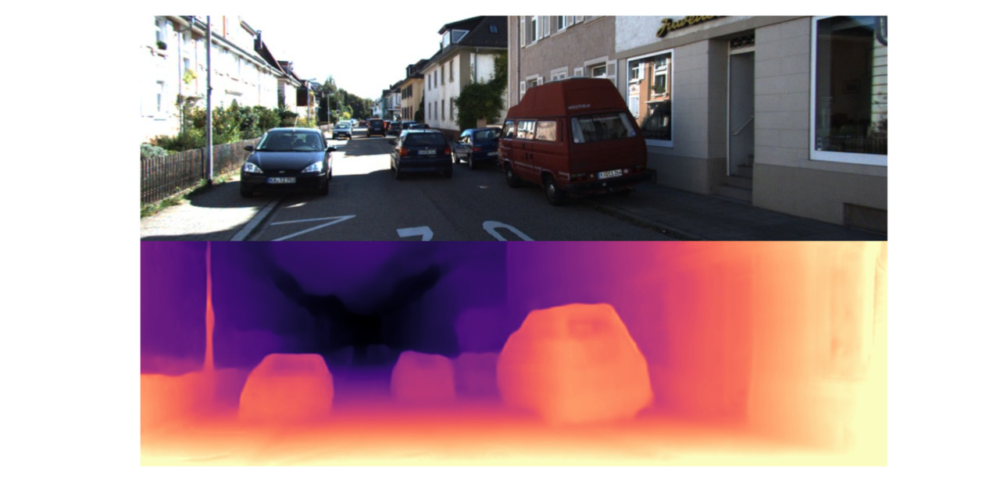
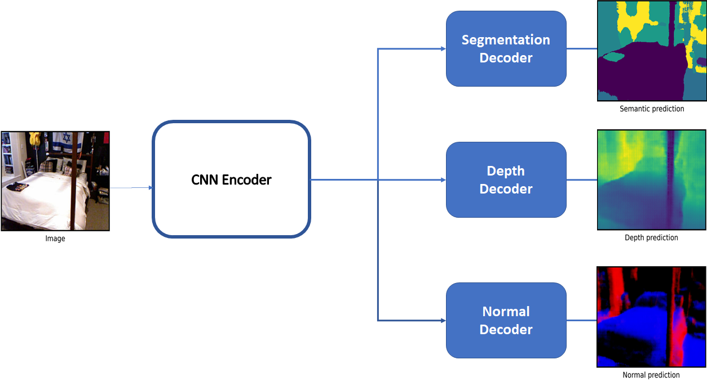
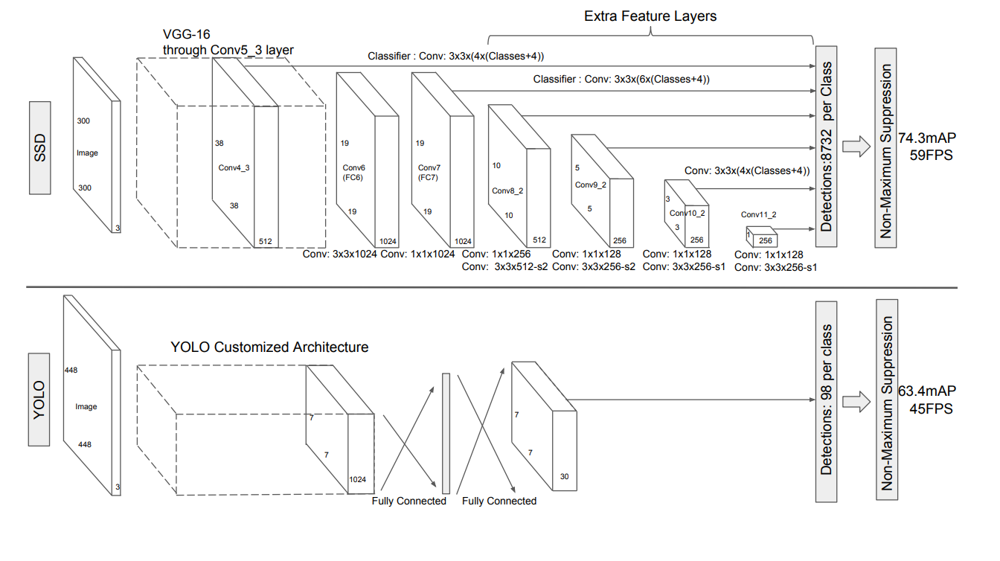
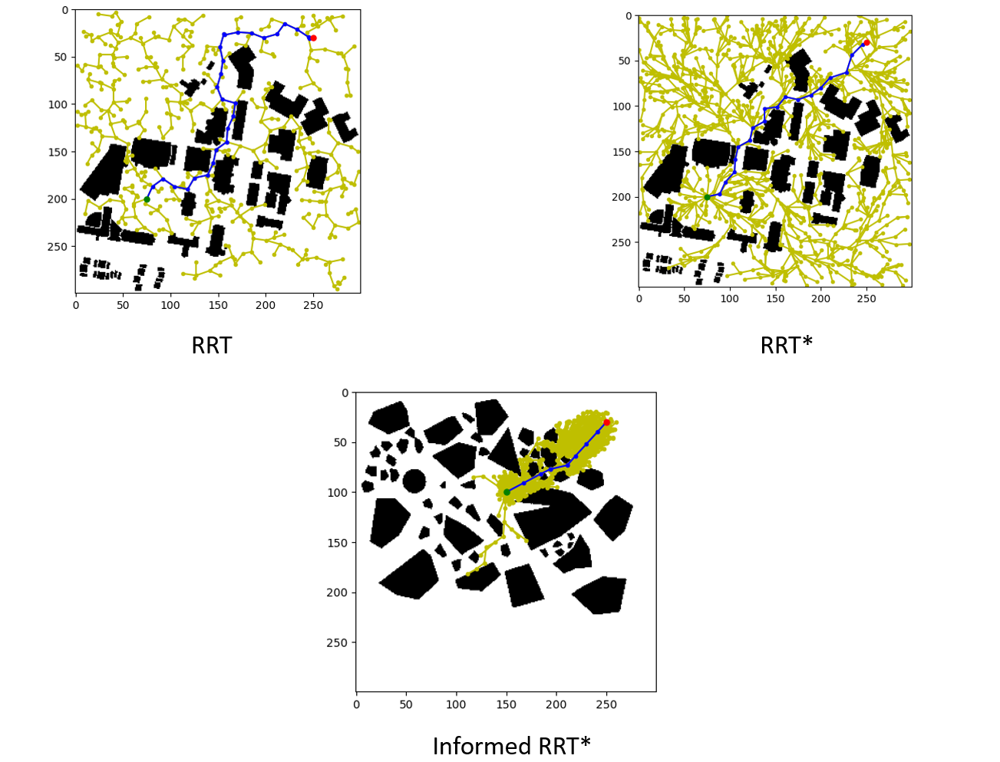

This project is used to generate synthetic data for training different
Deep learning models for autonomous driving tasks. This project support
cameras and lidars and can generate annotaions for tasks such as 3D lidar
object detection, monocular depth estimation, and semantic segmentation.
In this project I am implementing Social GANs to predict
the trajectory of vehicles in a scene. I am using
Argoverse Motion Forecasting Dataset to train the model.

This is my internship project with Torc Robotics.
In this project, we develop a self-supervised monocular depth
estimation network that can estimate depth using single image.

This is my internship project with Torc Robotics.
In this project, we worked on a network that can predict semantic and instance masks for lane-lines.

In this project, we propose a unified architecture
for collaborative depth and surface normal
estimation along with semantic segmentation in
which the encoder is shared between the three
tasks.

This is my personal project. I implemented YOLO-V1 from scratch in pytorch.
The goal of this project is to get a better understanding about 2D-object detection and Pytorch.

This is one of my from-scratch personal project.
In this project I implemented Pyramid Scene parsing
network (PSPNet)
for semantic-segmentation. The goal
of this project was to understand how to optimize
deep learning architectures. in Pytorch

Used Single Shot Detector (SSD)
to detect and classify hand-gestures and controlled Nvidia's Jetbot using Jetson.

In this project, I implemented lattice planner for lef/right turning and overtaking of the vehicle.

In this project I implemented Sampling based path planning algorithms (PRM, RRT, RRT*, Informed RRT*) from scratch.